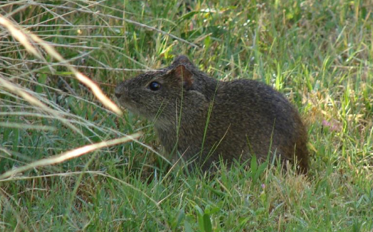

INICIO
NOSOTROS
ANIMALES
CAMPAÑAS
CÓMO AYUDAR
CONTACTO
Protegé a más de 400 especies
Leer más...
Protegé el Mar Argentino
Leer más...
Reserva Natural El Morejón
Leer más...

Reserva Natural Senderos del Monte
Leer más...